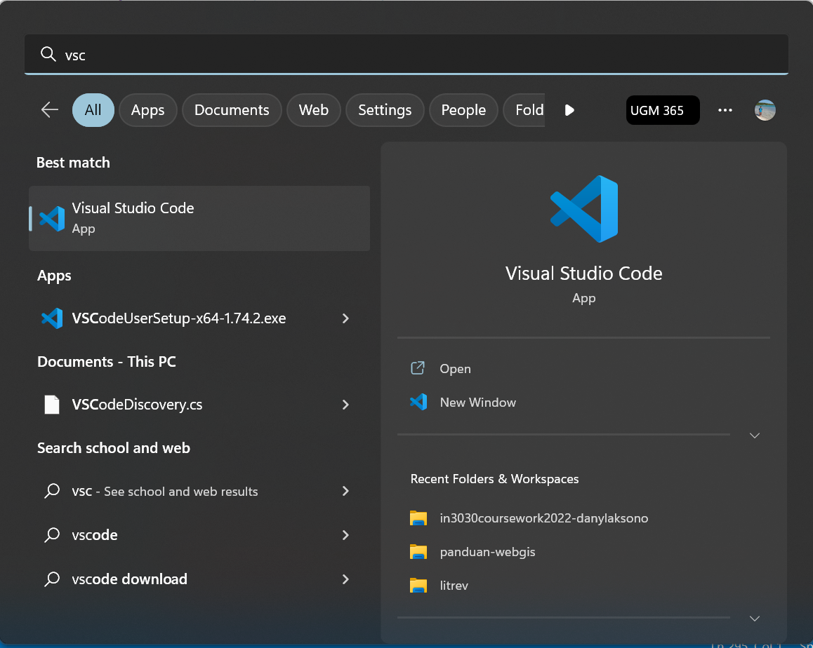

Instalasi Perangkat Lunak
Sub-bab berikut memberikan penjelasan tentang cara instalasi beberapa perangkat yang akan kita gunakan sepanjang modul. Berbagai perangkat yang disebutkan di sini tidak hanya berguna untuk keperluan modul ini saja. Anda akan menjumpai kebutuhan serupa ketika mengikuti berbagai tutorial lain. Anggaplah perangkat-perangkat yang ada di sini sebagai kemampuan dasar yang perlu Anda miliki sebelum menyelami lebih jauh tentang WebGIS development. Dengan mengetahui fungsi dan bagaimana menggunakan perangkat-perangkat ini, Anda akan jauh lebih siap untuk mengikuti berbagai tutorial lain yang ada di luar sana.
Perlu diingat bahwa dalam perkembangan dunia internet yang serba cepat, sebagian panduan ini mungkin tidak dapat digunakan setelah berlalu beberapa waktu. Demikian pula, mungkin versi yang lebih baru dari perangkat lunak yang disebutkan di sini akan bermunculan, sehingga Anda disarankan untuk memeriksa sendiri apabila terdapat versi terbaru yang dapat diinstall selain yang disebutkan di sini.
Instalasi WSL pada Windows
Apa itu WSL?
Windows Subsystem for Linux (WSL) adalah fitur dari sistem operasi Windows yang memungkinkan pengguna untuk menjalankan aplikasi Linux di dalam lingkungan Windows. Pendeknya, WSL merupakan satu cara yang memudahkan pengguna Windows untuk mengakses aplikasi Linux tanpa perlu menginstal Linux secara terpisah di komputer mereka (misalnya, dengan menggunakan Dual Boot atau Virtual Box).
Dengan WSL, pengguna dapat mengakses dan menjalankan perintah Linux seperti yang mereka lakukan di lingkungan Linux asli. Selain itu, WSL juga memungkinkan pengguna untuk mengakses file dan folder di sistem operasi Windows dari dalam lingkungan Linux, sehingga memudahkan bagi pengguna untuk mengelola file dan folder di komputer mereka.
WSL telah tersedia untuk sistem operasi Windows sejak versi Windows 10 yang dirilis pada tahun 2016. WSL memberikan angin segar bagi para developer yang menginginkan fleksibilitas dan kapabilitas Linux, namun memerlukan kemudahan Windows dalam manajemen file, misalnya. Meskipun demikian, ada beberapa batasan dari WSL, misalnya, terdapat beberapa fungsi dasar pada Linux yang tidak dapat dijalankan di sana. Hal ini mungkin akan berubah di masa yang akan datang, karena sepertinya Windows mencoba untuk mengintegrasikan lingkungan Linux sepenuhnya di dalam Windows.
Mengapa Menggunakan WSL pada Windows?
Dengan perkembangan pesat Linux pada berbagai platform dan dukungan komunitas yang sangat besar, Linux menjadi sistem operasi yang banyak digunakan oleh pengembang aplikasi, khususnya pada penggunaan server. Linux banyak dipilih karena selain mudah digunakan, keamanan dan stabilitas sistem yang diberikan juga menjadi poin penting dalam penggunaannya untuk keperluan server. Di sisi lain, Windows sebagai sistem operasi yang paling populer saat ini juga banyak digunakan untuk keperluan sehari-hari. Untuk itu, pengembangan perangkat lunak seringkali melibatkan kedua sistem operasi ini sekaligus (juga MacOS, bagi pengguna setianya).
WSL dalam konteks ini menjadi salah satu tool favorit bagi para pengembang perangkat lunak karena memungkinkan integrasi keduanya: Linux di satu sisi, dan Windows di sisi lain, secara hampir seamless. Untuk itu, pada modul ini panduan akan diberikan menggunakan WSL, meskipun tentu saja Anda dapat menyesuaikannya dengan sistem operasi lain (misalnya, MacOS).
Panduan ini mengasumsikan Anda menggunakan Sistem Operasi Windows 11. Apabila terdapat permasalahan pada instalasi atau pengaturan beberapa library, silahkan hubungi penulis untuk menemukan solusinya.
Instalasi WSL
WSL saat ini telah resmi menjadi bagian dari Windows 10 dan 11, sehingga instalasinya sama seperti instalasi perangkat lunak lain. Cara paling mudah tentunya adalah melalui Windows Store seperti berikut:
Buka Windows Store melalui Start Menu.
Pada jendela Windows Store yang terbuka, ketikkan WSL. Anda akan menjumpai tampilan seperti berikut:
Klik pada tombol
Getuntuk melakukan instalasi WSL.Setelah instalasi selesai, klik pada tombol
Open
And that’s it. WSL akan terinstall dan siap untuk digunakan. Anda akan menjumpai tampilan Linux seperti berikut ini:
WSL akan menginstall versi Linux yang terbaru sesuai dengan versi Distro Ubuntu terakhir. Ubuntu merupakan distro default yang diinstall oleh WSL. Meskipun demikian, Anda dapat menginstall Distro Linux lainnya apabila diperlukan (misalnya Kali Linux atau AlmaLinux).
Apabila Anda menemukan masalah dengan cara instalasi di atas, buka panduan instalasi resmi dari Windows berikut untuk menemukan solusi yang tepat: https://learn.microsoft.com/en-us/windows/wsl/install
Beberapa Perintah Dasar Shell Linux
Sebelum memulai dengan WSL, ada baiknya kita lakukan beberapa latihan tentang perintah-perintah dasar di Linux. Dalam rangka untuk menghindari pengulangan, modul berikut berisi beberapa latihan yang berguna untuk mengasah pemahaman Anda pada dasar-dasar penggunaan Linux:
https://www.danylaksono.com/panduan-fossgis/sesi1/arsitektur.html#mengunakan-shell
Luangkan waktu untuk melakukan beberapa latihan di link tersebut, seperti cara untuk berpindah direktori, membuat file baru, menampilkan keterangan dari sebuah file, dan seterusnya. Meskipun tidak harus, ini akan membantu Anda dalam melakukan latihan-latihan lain di modul ini.
Tidak perlu khawatir jika Anda merasa tidak dapat menghafal semua perintah Shell Linux di atas. Tujuan belajar pemrograman sama sekali bukan untuk menghafal perintah. Perintah-perintah di atas adalah sarana yang memudahkan Anda ketika membuat sebuah program. Jika Anda lupa, Anda dapat kembali kapanpun ke link dokumentasi di atas atau sekedar membuka Google dan mengingat kembali perintah yang Anda butuhkan. Percayalah, seiring waktu, Anda akan terbiasa menggunakan perintah-perintah tersebut tanpa sadar.
Mengakses Direktori WSL dari Windows
Seperti yang telah disebutkan, intergrasi WSL pada Windows bersifat seamless. Kita dapat mengakses aplikasi Windows dari WSL, dan sebaliknya, kita dapat mengakses direktori WSL dari Windows. Untuk mengakses direktori Ubuntu (WSL) yang telah kita install pada Windows, cukup buka Windows Explorer dan cari Icon Linux pada daftar direktori di sebelah kiri jendela Windows Explorer:
Instalasi NodeJS dan Package Manager
Modul ini berisi panduan dalam pembangunan WebGIS. Untuk itu, kita akan menggunakan salah satu framework yang hampir tidak diragukan lagi menjadi bagian penting dalam perkembangan dunia Web selama sepuluh tahun terakhir ini: NodeJS. Sub-bab ini akan membahas mengenai bagaimana melakukan instalasi NodeJS dan Node Package Manager (NPM).
Apa itu NodeJS?
Dulu, para pengembang web hanya mengenal Javascript sebagai ‘bahasanya browser’. Javascript hanya dapat dijalankan di browser sebagai pelengkap bahasa HTML dan CSS. Berbeda dengan bahasa lainnya seperti Java dan C# yang merajai server serta C++ dan DotNet yang dapat digunakan untuk membuat aplikasi desktop, Javascript pada masa itu hanya dikenal sebagai bahasa frontend untuk membuat halaman web menjadi interaktif.
Pada tahun 2008, Google merilis Javascript Engine V8. Jika sebelumnya Javascript hanya dapat dijalankan di browser, maka mesin ini memungkinkan Javascript untuk dieksekusi di berbagai platform yang berbeda. Selain itu, mesin ini juga memungkinkan kode Javascript untuk dijalankan secara parallel - sesuatu terasa mustahil di tahun-tahun sebelumnya.
Dengan adanya V8, Javascript kemudian menemukan nafas baru: bahasa yang dulunya hanya dikenal sebagai bahasa frontend kini dapat menjalankan berbagai aplikasi rumit dengan kecepatan dan kemampuan prosesing yang mumpuni. NodeJS adalah sebuah platform runtime 1 yang dibangun di atas JavaScript engine V8, yang memungkinkan untuk menjalankan kode JavaScript di luar browser (termasuk di server). NodeJS memungkinkan kita untuk membangun aplikasi server-side dengan menggunakan JavaScript sebagai bahasa pemrograman utama, seperti aplikasi pengolah data dan basisdata serta aplikasi yang memerlukan performa tinggi seperti game. Bahkan, Javascript kini juga dapat digunakan untuk membuat sebuah aplikasi desktop yang dapat dijalankan di Windows, MacOS atau Linux.
1 Runtime dapat diartikan secara bebas sebagai tempat di mana kode Javascript dijalankan. Dulu, satu-satunya Javascript runtime adalah sebuah browser. Sekarang Javascript dapat dijalankan hampir di platform manapun, misalnya pada sebuah server. Runtime dibangun di atas sebuah engine, yang dalam hal ini adalah V8.
Dengan banyaknya pengembang yang membuat aplikasi berbasis NodeJS, dibuatlah sebuah wadah untuk saling berbagi-pakai paket aplikasi yang dibuat tersebut. NPM adalah singkatan dari Node Package Manager2, yang merupakan sebuah sistem manajemen paket untuk bahasa pemrograman JavaScript. NPM memungkinkan para developer untuk berbagi kode, menggunakan kode yang dibuat oleh orang lain, dan mengelola dependensi (pustaka yang dibutuhkan) pada proyek mereka. Dengan adanya NPM, kita dapat menginstall berbagai paket perangkat lunak dengan mudah, sekaligus memastikan bahwa dependencies yang digunakan oleh paket tersebut sesuai satu dengan yang lain pada aplikasi kita.
2 Node adalah nama sebuah Runtime Javascript. Alternatif lain untuk NPM adalah Yarn
Halaman web seperti yang kita lihat saat ini saat ini dibangun di atas berbagai macam paket yang telah dibuat oleh para developer lain. Kita tidak perlu membangun semua hal dari nol. Sesuai prinsip ‘Do Not Reinvent The Wheel’, kita tinggal menggunakan paket-paket aplikasi yang telah dibangun orang lain untuk melengkapi web kita sesuai dengan apa yang kita inginkan. NextJS dan Maplibre yang akan kita gunakan nanti merupakan contoh paket yang dipublikasi di NPM, dan dibangun di atas ratusan atau bahkan ribuan paket-paket lain.
Instalasi NodeJS pada WSL
Pada bagian ini kita akan melakukan instalasi NodeJS sekaligus NPM. Terdapat berbagai macam cara untuk melakukan instalasi NodeJS, akan tetapi pada modul ini akan dilakukan instalasi dengan menggunakan NVM (Node Version Manager). NVM memudahkan kita untuk berpindah dari satu versi NodeJS ke versi lain. Kadang kala kita memerlukan ini apabila terdapat beberapa aplikasi berbeda yang menggunakan dependencies paket NPM yang berbeda. Menginstall beberapa versi NodeJS sekaligus akan menimbulkan banyak permasalahan. NVM mengatasi masalah-masalah tersebut.
Berikut adalah langkah instalasi NodeJS dan NPM dengan menggunakan NVM:
Buka Ubuntu WSL Anda. Pada contoh berikut, versi WSL yang penulis gunakan adalah versi Ubuntu 20.04. Boleh jadi versi WSL yang terinstall di komputer Anda berbeda sesuai dengan versi stabil terakhir dari Ubuntu.
Pada jendela Ubuntu yang muncul, copy-paste kode di bawah ini dan jalankan:
curl -o- https://raw.githubusercontent.com/nvm-sh/nvm/v0.39.3/install.sh | bash
Klik-kanan pada konsol Ubuntu = ‘Paste’
Untuk mengaktifkan NVM, tutup kemudian buka kembali konsol Ubuntu, atau jalankan kode di bawah ini tanpa perlu menutup konsol:
export NVM_DIR="$HOME/.nvm" [ -s "$NVM_DIR/nvm.sh" ] && \. "$NVM_DIR/nvm.sh" [ -s "$NVM_DIR/bash_completion" ] && \. "$NVM_DIR/bash_completion"Pastikan bahwa NVM telah terinstall dengan menjalankan perintah berikut:
nvm -vPerintah di atas berfungsi untuk memeriksa versi dari NVM yang terinstall, sekaligus memastikan bahwa NVM telah dapat dijalankan dengan baik. Pada saat modul ini ditulis, versi terakhir dari NVM adalah
0.39.3.Setelah NVM terinstall, selanjutnya kita dapat melakukan instalasi NodeJS dan NPM sekaligus. Untuk melakukan instalasi versi NodeJS terbaru melalui NVM, kita dapat menggunakan perintah berikut:
nvm install nodeTerakhir, kita pastikan bahwa NodeJS dan NPM telah terinstall dengan perintah berikut:
node -v npm -v
Dengan demikian, kita telah berhasil melakukan instalasi versi terbaru dari NodeJS dan NPM.
Apabila kelak kita mendapati kebutuhan untuk menggunakan versi NodeJS yang berbeda, kita dapat memanggil perintah yang disediakan NVM untuk itu:
# perintah ini berfungsi untuk menampilkan daftar versi NodeJS
nvm ls-remote
# perintah ini untuk menginstall dan menggunakan versi yang dipilih
# sebagai contoh, digunakan versi 18.12.1:
nvm install 18.12.1
nvm use 18.12.1Instalasi Miniconda
Tentang Miniconda
Python adalah salah satu bahasa pemrograman paling populer di dunia saat ini. Bahasa Python tergolong mudah dipahami, sehingga mendorong banyak developer membangun aplikasinya pada Python. Meskipun demikian, manajemen environment pada Python terkadang cukup menyulitkan bagi developer pemula. Untuk itu, Anaconda dibuat agar para developer dapat menggunakan Python dengan lebih mudah. Versi mini dari Anaconda, Miniconda, dibuat untuk memudahkan instalasi paket-paket Pyhton sehingga dapat digunakan bahkan oleh developer pemula.
Instalasi Miniconda pada WSL
Berikut adalah langkah instalasi Miniconda pada WSL:
- Buka konsol WSL, kemudian ketikkan perintah berikut untuk mengunduh instalasi Miniconda:
wget https://repo.anaconda.com/miniconda/Miniconda3-py310_22.11.1-1-Linux-x86_64.sh- Lakukan instalasi dengan menjalankan file hasil unduhan.
sh ./Miniconda3-py310_22.11.1-1-Linux-x86_64.sh Tekan Enter untuk melanjutkan instalasi
- Pada pertanyaan yang muncul, jawab dengan mengetikkan
yes
Setelah terinstall, pada konsol kita akan muncul tambahan (base) yang menunjukkan bahwa kita berada pada environment default miniconda. Selanjutnya kita telah dapat menggunakan perintah-perintah conda, misalnya untuk melakukan instalasi paket Python atau membuat environment baru.
Instalasi Docker dan Docker Compose
Pada sub-bab ini, kita akan melakukan instalasi Docker. Meskipun Docker sendiri adalah salah satu perangkat yang paling berguna bagi seorang developer web, modul ini sendiri tidak akan membahas banyak mengenai penggunaannya. Anda akan menjumpai banyak contoh penggunaan perangkat ini nantinya di modul lain.
Apa itu Docker?
Telah disebutkan sebelumnya di bab ini bahwa sebuah aplikasi web terdiri dari banyak komponen yang berbeda. Anda dapat asumsikan sebuah web sebagai sebuah bangunan yang terdiri dari komponen-komponen yang saling melengkapi. Coba kita asumsikan sebuah aplikasi web sebagai satu bangunan restoran franchise: Bangunan restoran tersebut dibangun dari banyak komponen: ada batu-bata penyusun gedungnya, tempat parkir, meja-kursi, pelayan, alat-alat masak, dan seterusnya. Sebagai restoran franchise, Anda perlu untuk membangun restoran pertama terlebih dahulu bukan? Selanjutnya, Anda perlu membangun restoran lain dengan struktur bangunan, konsep dasar dan tema yang sama persis seperti restoran pertama tersebut.
Analogi di atas kurang-lebih sama seperti pembangunan sebuah aplikasi webGIS. Anda membangun terlebih dahulu aplikasi WebGIS di lingkungan ‘development’ yang Anda miliki, kemudian memindahkannya (‘deploy’) ke lingkungan ‘production’ di mana aplikasi tersebut benar-benar digunakan oleh klien. Pindah-memindah aplikasi WebGIS ini tentu bukan perkara mudah, karena, sekali lagi, aplikasi ini tersusun dari banyak komponen yang berbeda. Kita tentunya tidak ingin setiap kali melakukan deployment aplikasi, kita harus menyusunnya dari nol bukan?
Docker adalah perangkat lunak yang memungkinkan Anda untuk mengelola aplikasi dalam “wadah” yang dapat dibawa ke mana saja dan dijalankan di mana saja. Ini membantu Anda mengelola aplikasi Anda dengan lebih mudah, karena Anda tidak perlu khawatir tentang konfigurasi sistem yang berbeda atau dependensi yang berbeda di lingkungan production yang diperlukan untuk menjalankan aplikasi Anda. Anda hanya perlu ‘membungkus’ aplikasi Anda dalam wadah Docker, dan Anda dapat dengan mudah memindahkannya ke berbagai lingkungan, seperti server, mesin virtual, atau cloud. Analogi untuk Docker dapat Anda lihat pada logonya: sebuah kapal yang berfungsi untuk melakukan shipment berbagai kontainer aplikasi yang ada di dalam muatannya.

Keuntungan lain dari penggunaan Docker adalah bahwa Anda dapat memanggil paket aplikasi yang dibuat oleh orang lain, menyusunnya (‘compose’) sebagai komponen-komponen baru, dan mendapatkan bangunan baru yang terdiri atas komponen-komponen tersebut (bayangkan sebuah bangunan restoran - kali ini dengan beberapa lantai berbeda). Docker memungkinkan semua urusan pindah-memindah aplikasi menjadi lebih mudah.
Instalasi Docker for Windows
Masih ingat berbagai keuntungan kita menggunakan WSL sebagai lingkungan development? Salah satunya adalah kemudahan integrasi antara Windows dan Linux pada satu mesin yang sama. Untuk itu, kita dapat melakukan instalasi Docker pada Windows, dan kita akan tetap dapat mengaksesnya dari Linux.
Berikut adalah langkah instalasi Docker for Windows. Anda dapat melihat panduan resmi instalasi pada alamat berikut:
Unduh instalasi Docker Desktop for Windows. Jalankan file *.exe ketika berkas tersebut selesai diunduh.
Pastikan bahwa pilihan
Use WSL 2 instead of Hyper-Vaktif atau tercentang. Lanjutkan instalasi sampai selesai.Jalankan aplikasi service Docker Desktop dari start menu. Aplikasi ini akan berjalan di belakang layar untuk mendukung perintah Docker pada WSL:
Apabila jendela ini muncul, Anda dapat menutupnya. Docker akan tetap berjalan sebagai sebuah service di Windows.
Untuk memastikan bahwa Docker telah terinstall, buka konsol WSL, kemudian gunakan perintah berikut:
docker run hello-worldPerintah di atas akan memanggil kontainer aplikasi hello-world dari Docker Hub, kemudian menjalankannya pada WSL. Apabila instalasi berjalan tanpa kendala, hasil berikut akan muncul di konsol WSL Anda:
Diantara paket Docker yang terinstall adalah perintah Docker Compose yang dapat digunakan untuk membuat paket aplikasi agar lebih mudah dijalankan. Cek bahwa perintah ini telah terinstall dengan sempurna menggunakan perintah berikut:
docker compose -vHasilnya adalah seperti gambar berikut:
Setelah kedua perintah tersebut berhasil dijalankan dengan baik, kita siap untuk menggunakannya pada beberapa latihan di modul ini.
Instalasi Code Editor (VSCode)
Tentunya, dalam pembangunan aplikasi WebGIS kita memerlukan sebuah code editor. Anda mungkin familiar dengan Notepad++, akan tetapi untuk modul ini kita akan menggunakan sebuah Code Editor sekaligus IDE (Integrated Development Environment). Editor kode sederhana seperti Notepad++ mungkin cukup untuk sekedar melakukan editing pada beberapa berkas sederhana, tetapi kita memerlukan sebuah IDE untuk pembangunan aplikasi yang lebih serius.
Tentang Integrated Development Environment (IDE)
Jadi, apa itu IDE?
Integrated Development Environment (IDE) adalah aplikasi perangkat lunak yang menyediakan fasilitas yang menyeluruh bagi programmer komputer untuk pengembangan perangkat lunak. Termasuk di dalam IDE adalah code editor, compiler atau interpreter, dan debugger yang dapat diakses melalui antarmuka pengguna grafis (GUI) tunggal. IDE dirancang untuk meningkatkan produktivitas dengan menyediakan satu antarmuka untuk semua alat yang dibutuhkan seorang developer: untuk menulis, menguji, dan men-debug kode mereka.
Di sisi lain, editor kode seperti Notepad++ adalah aplikasi perangkat lunak yang secara khusus dirancang untuk mengedit berkas kode sederhana. Editor kode biasanya menyediakan fitur dasar seperti highlighting syntax, auto-indentasi, dan code completion, tetapi biasanya tidak termasuk fitur advanced yg dibutuhkan untuk pembangunan aplikasi yang lebih serius, seperti compiler, interpreter, atau debugger. Editor kode secara umum lebih sederhana dan ringan daripada IDE, dan seringkali digunakan oleh developer yang hanya membutuhkan fitur-fitur editing dasar dengan beberapa tambahan.
Beberapa contoh code editor/IDE yang populer adalah:
- Visual Studio Code: Code editor yang dikembangkan oleh Microsoft dengan berbagai fitur seperti debugging, intelligent code completion, dan version control. VSCode dapat digunakan untuk berbagai bahasa pemrograman.
- Sublime Text: Code editor yang ringan dan cepat dengan berbagai fitur seperti syntax highlighting, code completion, dan code folding. Sama seperti VSCode, Sublime mendukung penggunaa berbagai bahasa pemrograman.
- Atom: Code editor yang dikembangkan oleh GitHub dengan berbagai fitur seperti multi-pane view, package manager, dan integrasi dengan Git. Perangkat ini juga dapat digunakan untuk berbagai bahasa pemrograman.
- IntelliJ IDEA: Integrated Development Environment (IDE) yang dikembangkan oleh JetBrains untuk berbagai bahasa pemrograman seperti Java, Kotlin, dan Scala
- Eclipse: IDE yang dapat digunakan untuk berbagai bahasa pemrograman seperti Java, C++, dan PHP.
- PyCharm: IDE yang dikembangkan oleh JetBrains untuk bahasa pemrograman Python. PyCharm menyediakan berbagai fitur seperti debugging, testing, dan refactoring untuk bahasa Python. Karena dikhususkan untuk bahasa Python, PyCharm sangat mudah digunakan, misalnya, ketika kita berurusan dengan beberapa environment sekaligus pada Python.
- WebStorm: IDE yang dikembangkan oleh JetBrains untuk bahasa pemrograman JavaScript dan TypeScript. IDE ini menyediakan berbagai fitur seperti debugging, testing, dan code completion.
Pada modul ini, kita akan menggunakan VSCode. Anda tentu dibolehkan untuk menggunakan IDE lain sesuai selera. Secara umum, fungsi-fungsi dasar dari IDE di atas sama, jadi Anda tidak akan kesulitan untuk mengikuti modul ini meskipun Anda menggunakan IDE yang lain.
Instalasi VSCode
Sama seperti instalasi Docker yang memungkinkan kita untuk menggunakan installer pada Windows, instalasi VSCode juga dapat kita lakukan pada Windows, namun memungkinkan akses dari Linux pada WSL. Langkah untuk instalasi VSCode adalah sebagai berikut:
Unduh instalasi VSCode dari sini, kemudian jalankan installer tersebut.
Setelah selesai terinstall, VSCode dapat langsung dijalankan. Untuk menjalankan VSCode dari Windows, Anda dapat menggunakan Start Menu:

Ingat bahwa ini akan membuka VSCode di lingkungan Windows. Untuk membuka VSCode dari lingkungan WSL, kita dapat menggunakan perintah berikut pada folder yang akan dibuka:
# Perhatikan tanda titik setelah 'code'. Titik ini berarti 'buka vscode di lokasi ini'
code .VSCode juga dapat diinstall dari Microsoft Store:
Beberapa ekstensi yang berguna
Salah satu keunggulan VSCode adalah ekosistem ekstensinya yang begitu luas. Terdapat ribuan ekstensi yang dapat kita gunakan untuk memudahkan kita dalam melakukan pembangunan aplikasi. Berikut adalah beberapa diantaranya:
- WSL. Anda memerlukan ekstensi ini untuk menghubungkan VSCode pada Windows dengan WSL. Cukup lakukan instalasi ekstensi ini, kemudian buka VSCode seperti biasa dari konsol WSL
- Docker. Sama seperti ekstensi WSL di atas, ekstensi Docker ini berguna untuk memudahkan integrasi Docker Desktop pada Windows dengan lingkungan Linux pada WSL.
- Prettier. Ekstensi ini memungkinkan Anda untuk merapikan kode secara otomatis. Hal ini penting untuk memudahkan kita membaca dan memahami kode kita sendiri
- Github Copilot. Salah satu ekstensi yang paling berguna, karena kita dapat meminta CoPilot untuk menuliskan kode sesuai dengan yang kita inginkan. Copilot memerlukan lisensi edukasi yang dapat diakses dari Github Classroom
- Blackbox. Sebagai alternatif untuk Copilot, Anda dapat menggunakan Blackbox. Blackbox memiliki fitur yang sama seperti Copilot, akan tetapi tidak memerlukan lisensi edukasi khusus
Untuk melakukan instalasi ekstensi pada VSCode, gunakan menu Extension Marketplace pada daftar menu di bagian kiri jendela VSCode. Cukup ketikkan nama ekstensi di atas, kemudian klik install.

Dengan demikian, kita telah melakukan instalasi untuk semua perangkat yang kita butuhkan pada modul ini. Di sub-bab selanjutnya kita akan mengenal dan menggunakan Git untuk version control system.